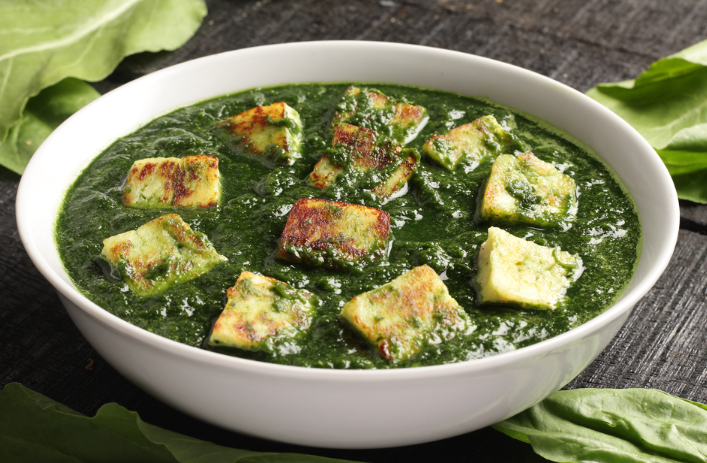

Palak Paneer
Ingredients
- 2 cups spinach leaves, blanched and pureed
- 200 grams paneer, cubed
- 1 large onion, finely chopped
- 2 tomatoes, finely chopped
- 1 tablespoon ginger-garlic paste
- 1 teaspoon cumin seeds
- 1/2 teaspoon turmeric powder
- 1 teaspoon garam masala
- 1/2 teaspoon chili powder
- 2 tablespoons oil
- Salt to taste
- 1 tablespoon lemon juice

Cooking Process
- Heat oil in a pan, add cumin seeds, and let them splutter. Add chopped onions and sauté until golden brown.
- Add ginger-garlic paste and cook for a minute. Add chopped tomatoes and cook until they soften.
- Add turmeric powder, garam masala, chili powder, and salt. Cook for a couple of minutes.
- Add the spinach puree and cook for 5-7 minutes. Adjust seasoning as needed.
- Add the paneer cubes and cook for another 5 minutes, allowing the paneer to absorb the flavors.
- Finish with lemon juice and serve hot with roti or rice.
Nutritional Information (Per Serving)
- Calories: 250 kcal
- Protein: 10g
- Fat: 18g
- Carbohydrates: 12g
- Fiber: 3g
- Vitamin A: 60% of Daily Value (DV)
- Iron: 15% of DV
- Calcium: 20% of DV
Cooking Tips & Tricks
- Blanch the spinach for 2 minutes and immediately transfer it to ice water to retain its bright green color.
- For a creamier texture, add a tablespoon of fresh cream or cashew paste to the spinach puree.
- If paneer is firm, soak it in warm water for 10 minutes to soften it before cooking.
- Grill the paneer cubes for a few minutes before adding them to the curry to give them a smoky flavor.
- Add a pinch of kasuri methi (dried fenugreek leaves) at the end for an authentic restaurant-style taste.